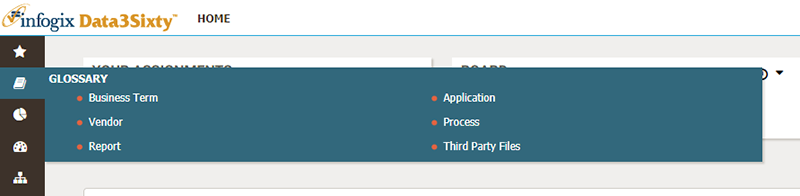
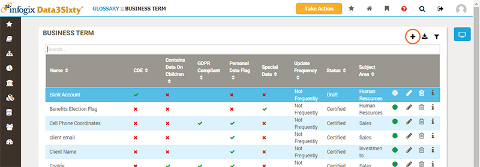
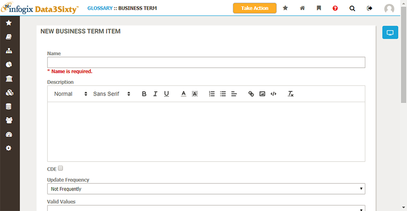

Before adding new artifacts to the Glossary you should have completed the following tasks:
These steps can typically takes weeks or months to complete. It is absolutely essential that you have a thorough definition and complete consensus before you enter any term. Once you have completed these steps, then it is simply a matter of entering the terms.
To create a new artifact, you must first identify the type of artifact (Business Term, Report, Application, etc) and then navigate to that page in the Glossary:

From the artifact type page you can then choose the Add button to create a new artifact:

Depending on the process of your organization you may not be able to directly add a new item to the Glossary, but instead must propose a new item. In this case, the Add button is replaced by the Propose New Term button. [TODO: Check if this is still the case]
The New Item panel appears, prompting you to populate the fields required to define the term:

The fields to populate will be customized for your organization, as are the artifact types to choose from. If you cannot find a suitable artifact type, which correctly categorizes your artifact and provides the correct fields to populate, then you should ask an administrator to create a new artifact type for you. If you wish to learn more about configuring artifact types, or if you have the ability to perform this administration task yourself, please refer to the topic Establishing artifact types.
Once you have populated the form, hit Save to propose or create the new artifact.
If you are only able to propose an artifact, then an approval workflow will be initiated.
Note: Responsibilities for approvals are determined by the configuration of artifact types, roles and responsibilities. If you are responsible for configuring the system, or keen to understand about how these aspects of the system are set up, please refer to the administration topic Establishing responsibilities
You will be notified once your proposed terms has either been approved or rejected. Once approved, the term will appear in the Glossary.
If you are able to create artifacts directly, then your artifact will be created and assigned the Status of Draft.
Typically, a data steward is then be required to complete the definition of the artifact (including the settings of roles and responsibilities), and initiate a certification workflow, requesting approval and certification from the artifact owner.
See the next topic Developing artifacts for certification for more details.
If you have Administrator privileges, and have a number of items to enter, then you can bulk load them by importing from a spreadsheet.
Please see the topic Bulk loading for more details.